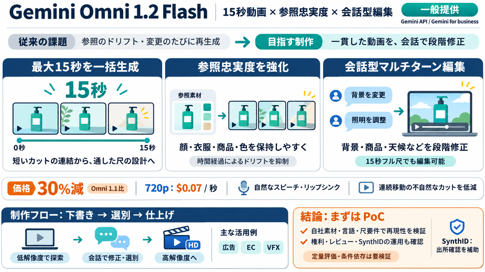

Start building with Nano Banana 2 Lite and Gemini Omni Flash
At Google I/O we introduced Gemini Omni Flash, the model where Gemini’s multimodal reasoning meets video generation and …

At Google I/O we introduced Gemini Omni Flash, the model where Gemini’s multimodal reasoning meets video generation and …
At Google I/O we introduced Gemini Omni Flash, the model where Gemini’s multimodal reasoning meets video generation and …
At Google I/O we introduced Gemini Omni Flash, the model where Gemini’s multimodal reasoning meets video generation and …
We are launching Gemini Omni 1.2 Flash with support for fifteen-second videos and improved reference adherence. You can…
minutes This content is generated by Google AI. Generative AI is experimental At Google I/O 2026, we announced our lat…